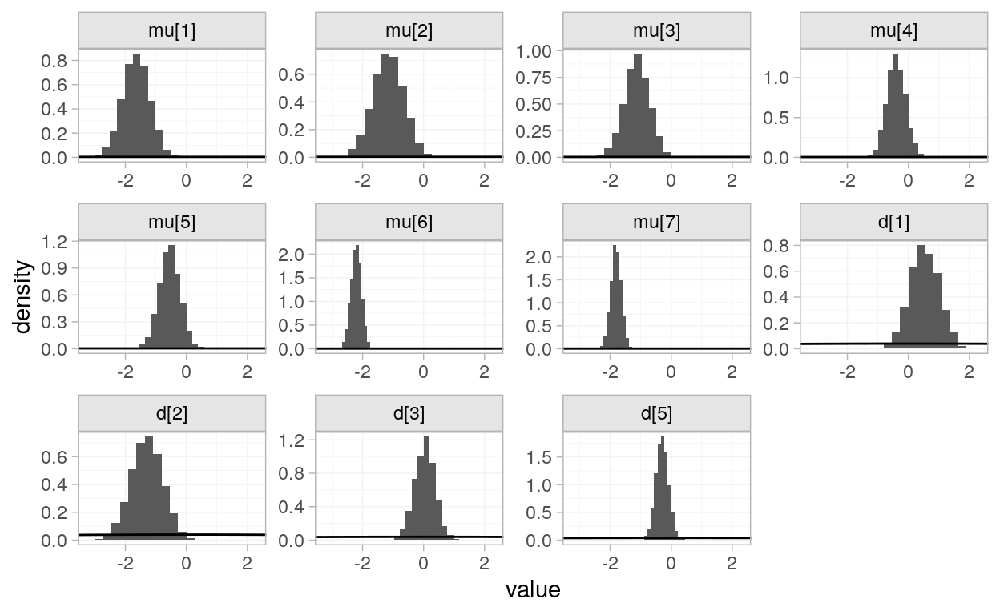

Work in progress.
# packages used in this blogpost
library(tidyverse)
library(multinma)
library(kableExtra)
library(skimr)Network meta-analysis is method proposed for providing more informed decision making for a target population, given particular covariates, from multiple studies.
There are several vignettes provided by the package multinma::, prompting questions. What different techniques do the vignettes demonstrate? How to perform an nma? And what is the underlying theory?
Attempting to make sense of the theory.
A meta-analysis is a special type of linear regression, wherein the response may be thought of as a linear combination (a construction from set of terms multiplying each term by a constant and adding the results).
In a simple case of linear regression, we assume the response of interest, \(y\), may be thought of in terms of grand mean \(\beta_0\) and a covariate \(x\) with coeffecicient \(\beta_1\), \[
y = \beta_0 + \beta_1 x.
\] and that observations \(y_i\) differ slightly from this overall response effect by some sampling error, \(\varepsilon \sim N(0, \sigma^2)\), so that, for the \(i\)th observation, we have
\[
y_i = B_0 + B_1 x + \varepsilon_i.
\] Where multiple covariates are to be considered, this construction is generalised to the matrix formula, \[
\mathbf y = \mathbf {X\beta} + \mathbf{\varepsilon}.
\] In a random effects model, instead of a coeffecient, a random effect is a term added to the equation that carries its own distribution, similar to the sampling error \(\varepsilon\).
The simplest case of meta-analysis, without covariates we wish to control the repsonse by, we consider \(k = 1, ..., K\) studies’ obesrvations in terms of a grand mean across studies, \(\mu\) (taking the role of \(\beta_0\) above), with a study-specific adjustment, \(\theta_k \sim N(0, \tau^2)\), so that the observation for the \(k\)th study we have \[ y_k = \mu + \theta_k + \varepsilon_k, \] with sampling error \(\varepsilon_k \sim N(0, \sigma_k^2)\).
Note the error, \(\varepsilon_k\), for the \(k\)th study is attributed an associated study-specific variance, \(\sigma_k^2\), whereas \(\tau^2\), the variance of \(\theta_k\) is an aggregate measure of variation across all studies.
Meta-analysis model can be extended to meta-regression, with the addition of covariates, as with standard linear regression, \[ y_k = \mu + \theta_k + \mathbf {B_k X} + \epsilon_k \]
Is this correct, are the regression coefficients \(\mathbf{\beta_k}\) indexed by study \(k\)?
To further complicate matters, a meta-analysis is often a pairwise comparison between two groups, a control and and intervention group, with the central question, what is the difference in effect between the two groups across all studies? In this case, the response \(y_k\), the aggregated effect \(\mu\), and the random effect for variation of this study, \(\theta_k\), all measure a pairwise comparison. The pairwise comparison chosen depends on the context of the response variable in question, such as a standardised mean difference (Cohen’s \(d\)), or a bias-adjusted \(d\) (Hedge’s \(g\)), for continuous response variables. Similarly, for binary data, an appropriate measure of risk or odds ratios may be chosen (???).
The vignette opens with this unfamiliar command.
options(mc.cores = parallel::detectCores())The BCG vaccine for tuberculosis vignette analyses the bcg_vaccine dataset provided by multinma::.
# first few rows of data set
bcg_vaccine %>%
head() %>%
kable()| studyn | trtn | trtc | latitude | r | n |
|---|---|---|---|---|---|
| 1 | 1 | Unvaccinated | 44 | 11 | 139 |
| 1 | 2 | Vaccinated | 44 | 4 | 123 |
| 2 | 1 | Unvaccinated | 55 | 29 | 303 |
| 2 | 2 | Vaccinated | 55 | 6 | 306 |
| 3 | 1 | Unvaccinated | 42 | 11 | 220 |
| 3 | 2 | Vaccinated | 42 | 3 | 231 |
From an overview of the data, we see we have 6 columns, 26 rows, 5 numeric variables (columns) and 1 character column, trtc which identifies the group as unvaccinated or vaccinated, for a given study.
# get an overview of the data
bcg_vaccine %>%
skim()| Name | Piped data |
| Number of rows | 26 |
| Number of columns | 6 |
| _______________________ | |
| Column type frequency: | |
| character | 1 |
| numeric | 5 |
| ________________________ | |
| Group variables | None |
Variable type: character
| skim_variable | n_missing | complete_rate | min | max | empty | n_unique | whitespace |
|---|---|---|---|---|---|---|---|
| trtc | 0 | 1 | 10 | 12 | 0 | 2 | 0 |
Variable type: numeric
| skim_variable | n_missing | complete_rate | mean | sd | p0 | p25 | p50 | p75 | p100 | hist |
|---|---|---|---|---|---|---|---|---|---|---|
| studyn | 0 | 1 | 7.00 | 3.82 | 1 | 4.00 | 7.0 | 10.00 | 13 | ▇▅▇▅▇ |
| trtn | 0 | 1 | 1.50 | 0.51 | 1 | 1.00 | 1.5 | 2.00 | 2 | ▇▁▁▁▇ |
| latitude | 0 | 1 | 33.46 | 14.15 | 13 | 19.00 | 33.0 | 44.00 | 55 | ▇▂▃▇▃ |
| r | 0 | 1 | 99.04 | 148.75 | 3 | 10.25 | 29.0 | 122.00 | 505 | ▇▁▁▁▁ |
| n | 0 | 1 | 13744.12 | 24640.37 | 123 | 834.50 | 2521.5 | 13415.25 | 88391 | ▇▁▁▁▁ |
From bcg_vaccine’s documentation, we learn that r is the number diagnosed with tuberculosis in the follow up period from a sample size of n. The latitude of the study is also provided, so comparisons can be made on the basis of the study’s relative position within the global south and north.
The numbers of individuals diagnosed with TB in each arm during the study follow-up period are recorded.
Before modelling as a network meta-analysis, we convert the data to a nma_data object with set_agd_arm.
bcg_net <- set_agd_arm(
bcg_vaccine,
study = "studyn", # which col has study
trt = trtc, # which col indicates arm
# these columns are specified bc it is a count outcome
# i.e., binomial data
r = r, # col w binomial "success" trials
n = n, # col w binomial total trials
trt_ref = "Unvaccinated" # set default level of trt
)
# what do we get
bcg_net
A network with 13 AgD studies (arm-based).
--------------------------------------------- AgD studies (arm-based) ----
Study Treatments
1 2: Unvaccinated | Vaccinated
2 2: Unvaccinated | Vaccinated
3 2: Unvaccinated | Vaccinated
4 2: Unvaccinated | Vaccinated
5 2: Unvaccinated | Vaccinated
6 2: Unvaccinated | Vaccinated
7 2: Unvaccinated | Vaccinated
8 2: Unvaccinated | Vaccinated
9 2: Unvaccinated | Vaccinated
10 2: Unvaccinated | Vaccinated
... plus 3 more studies
Outcome type: count
--------------------------------------------------------------------------
Total number of treatments: 2
Total number of studies: 13
Reference treatment is: Unvaccinated
Network is connected
# what is in this?
stuff_in_net <- bcg_net %>% objects()
stuff_in_net
[1] "agd_arm" "agd_contrast" "classes" "ipd"
[5] "outcome" "studies" "treatments" Conventionally, in mathematical statistics, binomially distributed data is described in terms of “successful trials”. However, in this case, perhaps it’s more informative to think of this as the number of observed tuberculosis cases, out of the patients in a treatment group in a given study.
What's another word for “success” in binomial trials?
— Charles T. Gray ⚔ ((???)) September 2, 2020
In this case, it's number of people who have tuberculosis after treatment. There's nothing successful about that.
r = r, # col w binomial “success” trials
n = n, # col w binomial total trials
Most of these objects are empty. The first item is an updated version of the original data, and extractions of the studies and treatments are also provided. Classes, ipd, and contrast do not appear to relevant to this network.
# output everything contained in nma_data class bcg_net object
stuff_in_net %>%
map(.f = function(thing){bcg_net %>% pluck(thing)}) %>%
set_names(stuff_in_net)
$agd_arm
# A tibble: 26 x 9
.study .trt .r .n .sample_size trtn latitude r n
<fct> <fct> <dbl> <dbl> <dbl> <dbl> <dbl> <dbl> <dbl>
1 1 Unvacci… 11 139 139 1 44 11 139
2 1 Vaccina… 4 123 123 2 44 4 123
3 2 Unvacci… 29 303 303 1 55 29 303
4 2 Vaccina… 6 306 306 2 55 6 306
5 3 Unvacci… 11 220 220 1 42 11 220
6 3 Vaccina… 3 231 231 2 42 3 231
7 4 Unvacci… 248 12867 12867 1 52 248 12867
8 4 Vaccina… 62 13598 13598 2 52 62 13598
9 5 Unvacci… 47 5808 5808 1 13 47 5808
10 5 Vaccina… 33 5069 5069 2 13 33 5069
# … with 16 more rows
$agd_contrast
NULL
$classes
NULL
$ipd
NULL
$outcome
$outcome$agd_arm
[1] "count"
$outcome$agd_contrast
[1] NA
$outcome$ipd
[1] NA
$studies
[1] 1 2 3 4 5 6 7 8 9 10 11 12 13
Levels: 1 2 3 4 5 6 7 8 9 10 11 12 13
$treatments
[1] Unvaccinated Vaccinated
Levels: Unvaccinated VaccinatedOne question we might ask of the data is given the results of all these studies, what proportion of treated patients still have tuberculosis?
We fit a network meta-analysis model with a fit function.
bcg_nma <- nma(
bcg_net,
trt_effects = "random", # specify fixed or random effects model
prior_intercept = normal(scale = 100),
prior_trt = normal(scale = 100),
prior_het = half_normal(scale = 5)
)In order to interpret the results, we describe the model.
Let \(y_k\) denote the pairwise comparison between the unvaccinated and vaccinated groups, for the \(k\)th study. Then, we assume \(y_k\) may be thought of in terms of the overall pairwise comparison, \(\mu\), with an adjustment \(\theta_k\). To this we add sampling error, \(\varepsilon_k\), and, assume \(\gamma_k\) denotes the \(k\)th treatment effect, a component of \(\theta_k\).This provides the following system of assumptions.
\[ \begin{array}{rcl} y_k & = & \mu + \theta_k + \varepsilon_k\\ \varepsilon_k &\sim& \text{normal}(0, \sigma_k^2)\\ \theta_k &\sim& \text{normal}(0, \tau^2)\\ \tau^2 &\sim& \textrm{halfnormal}(0, 5^2)\\ \mu &\sim& \text{normal}(0, 100^2)\\ \gamma_k &\sim& \text{normal}(0, 100^2) \end{array} \]
What is the standard pairwise comparison for a binomial measure?
What is the prior on treatment? How to represent this in terms of model nomenclature?
Now we can use the model nomeclature to interpret the results.
# take a look at the raw results
bcg_nma
A random effects NMA with a binomial likelihood (logit link).
Inference for Stan model: binomial_1par.
4 chains, each with iter=2000; warmup=1000; thin=1;
post-warmup draws per chain=1000, total post-warmup draws=4000.
mean se_mean sd 2.5% 25% 50%
d[Vaccinated] -0.76 0.01 0.22 -1.19 -0.90 -0.76
lp__ -13454.03 0.15 4.51 -13463.65 -13456.83 -13453.71
tau 0.68 0.01 0.21 0.38 0.54 0.65
75% 97.5% n_eff Rhat
d[Vaccinated] -0.63 -0.32 1191 1
lp__ -13450.92 -13446.11 910 1
tau 0.79 1.17 1182 1
Samples were drawn using NUTS(diag_e) at Wed Sep 9 09:14:15 2020.
For each parameter, n_eff is a crude measure of effective sample size,
and Rhat is the potential scale reduction factor on split chains (at
convergence, Rhat=1).There is a handy function for comparison of the prior and posterior distributions. The prior distributions are displayed as lines, and posterior distributions as histograms.
plot_prior_posterior(bcg_nma, prior = c("trt", "het"))
The straight lines make sense when we see the full density.
Recall our densities of interest were